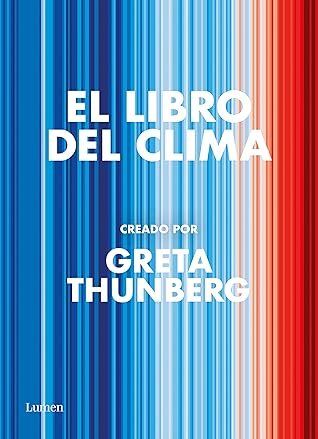

El libro del clima
Reseña por Jorge I. Zuluaga

Ver reseña en GoodReads (necesita cuenta)
Este libro es algo así como una versión del último informe del IPCC –el panel intergubernamental del cambio climático–, pero una versión que se deja leer, una versión que contiene datos y gráficos que si se entienden, una con posturas políticas explícitas en lugar del lenguaje rigurosamente aséptico de la ciencia, una con voces pocas veces citadas en estos cerebrales informes; y lo mejor, y la clave del texto, un informe del IPCC ampliamente y comentado por Greta Thunberg, quién es quizás la más reconocida activista climática de todos los tiempos. No descartaría, que después de está increíble obra divulgativa y obviamente, en general, de todo su activismo, Greta recibiera más pronto que tarde el Premio Nobel de paz.
Después de completarlo no me queda la menor duda que este libro, o importantes apartes suyos, debería convertirse muy pronto en una lectura obligatoria, no solo en la educación superior, sino también en la educación básica.
De nada sirve que lo estemos leyendo las personas que trabajamos en la ciencia, o las personas que, sin ser científicas, siguen muy de cerca los movimientos activistas en favor de la información de la crisis climática –y en general de la crisis global– y de la correspondiente justicia climática.
El libro es una extensa (430 páginas en la edición que leí) colección de ensayos cortos (máximo 4 páginas) escritos por profesionales de las ciencias, periodistas, activistas, incluso autoras como Margaret Atwood ("El cuento de la criada" entre otros), que abordan la práctica totalidad de las problemáticas relacionadas con la Crisis Climática.
Se divide en 5 partes que tienen títulos sencillos y directos: Cómo funciona el clima, Cómo está cambiando nuestro planeta, Cómo nos afecta, Qué hemos hecho al respecto, Qué debemos hacer ahora.
Cada capítulo está dividido a su vez en secciones de ensayos relacionados, todas encabezadas por un artículo, una reflexión o un comentario general escrito por la misma Greta Thunberg.
Debo decir que si bien conocía a Thunberg –como creo nos pasa a todos–, y he seguido de cerca las actividades, y oído muchos de los extraordinarios, quede impresionado por el increíble nivel de conocimientos y de introspección en los problemas que demuestra esta mujer joven a través de los escritos compilados en este libro.
Aunque sospecho –y aquí seguro asomaran algunos de mis sesgos y ofrezco disculpas por anticipado– que los textos fueron redactados con la asesoría de profesionales del ramo editorial, como dicen en redes, no tengo pruebas, pero tampoco dudas, de que las ideas expresadas en ellos tienen la firma reconocible de Thunberg. Como todo lo que ella dice en sus discursos, también estos textos son ¡asombrosamente contundentes!
La estructura por ensayos cortos facilita mucho la lectura, y, para quiénes seguramente usaremos estos textos como parte de ejercicios educativos, hace muy fácil convertir al libro en una fuente de textos cortos para que los lean aprendices de todos los niveles. Además, la independencia mutua de muchos de los ensayos, permite que el libro pueda empezar a leerse por cualquier parte. Incluso, como sucede con algunos libros de cultura general, podría escogerse al azar todos los días un ensayo, e ir leyendo o releyendo el texto en desorden. ¡No importa! Lo importante es informarse y está es a todas luces la principal función de "El libro del clima", pero también, como lo repite Thunberg en todas partes, de su propia labor de activismo climático.
La calidad del libro, como objeto físico, es maravillosa. Para quiénes amamos los libros físicos, este es un texto de colección. Papel grueso de buena calidad; hojas en policromía con fondos de colores; gráficos a todo color –muy necesario cuando de entender información científica se trata– y no dudaría que los colores de esos gráficos vienen de una paleta accesible, es decir, que pueden reconocer las personas que sufren de ceguera del color. ¡Una verdadera belleza!
Ahora bien: desde que lo compré, me pregunté si la misma Thunberg no habrá sentido algún malestar por el hecho que sea un libro impreso, es decir, con una huella material significativa, distribuído por el mundo usando sin duda alguna medios con altas emisiones de gases de invernadero. No encontré en ninguna parte un comentario sobre este hecho, y me hubiera encantado leer las reflexiones o aclaraciones de Thunberg sobre este hecho evidente.
Es difícil que resuma de forma justa, en el limitado espacio de esta reseña, la increíble cantidad de ideas, de datos, de reflexiones con las que me tope leyendo "El libro del clima". Muchas de las citas y datos más relevantes que encontré allí, terminaron entre mis publicaciones en Twitter –donde espero hayan inspirado a otras personas a adquirir y leer el libro–, en este enlace pueden encontrar algunas.
Y es que repito, estamos hablando de un texto con más de 400 páginas y un número no menor –no los conté rigurosamente- de 80 ensayos en temáticas tan diversas como el impacto del clima en los pastores de Renos del norte de Suecia, hasta la responsabilidad de los medios de comunicación, que, según George Monbiot, autor del ensayo correspondiente –5.11 "Cambiar el discurso de los medios de comunicación"– uno de mis ensayos preferidos de todo el libro, es sin duda alguna, una de las "industrias más responsable de la destrucción de la vida en el planeta".
¿Cómo metes en los párrafos de una reseña, siquiera una parte minúscula de este monumental esfuerzo informativo?. Yo creo que no hay forma y que lo único que se puede hacer es recomendar leer el libro sin demora.
Déjenme pues, para terminar, y no quitarle más el tiempo valioso que necesita para leer el libro, dejar por aquí algunas reflexiones selecciones que me dejo la lectura de "El libro del clima". Las organizaré siguiendo la estructura del libro.
¿Cómo funciona el clima? El clima es un organismo complejo, como lo es por ejemplo el cuerpo humano –esta analogía se la robo a Juan Fernando Salazar, un buen amigo, científico del clima, y quien se podría decir me inició en muchas de estas discusiones–. Está en un estado equilibrio delicado que se encuentra en riesgo de romperse –pasar puntos de inflexión– gracias a nuestras emisiones sostenidas de gases de invernadero. Desde hace más de 200 años nuestro planeta acumula energía extra, la mayor parte de ella en los océanos –como aprendí en este libro–, y una parte de la cuál se manifiesta como una temperatura en aumento. Gracias a científicos del clima como Michael Oppenheimer, autor de uno de los ensayos de este libro, hoy sabemos sobre el clima, su pasado y su futuro, lo que nunca habríamos imaginado. Esta ciencia esta llena de incertidumbres, principalmente porque describe un sistema de una complejidad impresionante, pero también de certezas, de predicciones precisas, que habrían sido impensables en el pasado.
¿Cómo está cambiando nuestro planeta? La Tierra del presente es irreconocible para la vida que ha compartido con nosotros el planeta por casi 300 000 años. Los niveles de gases de invernadero, dióxido de carbono y metano, además de las temperaturas y la intensidad de los eventos climáticos, no tienen parangón en los últimos cientos de miles de años a millones de años. El cambio climático se ha convertido en una máquina del tiempo que nos está transportando a un tiempo pasado en el que la mayoría de los organismos vivos que hoy habitan el planeta, no existían. Pero también a un futuro que creímos que llegaría sólo en nuestros peores sueños: un planeta con plásticos en cada rincón, con océanos moribundos y ácidos, aerosoles en abundancia que ni los peores volcanes podrían haber creado, incendios y olas de calor que se repiten al ritmo de las estaciones.
¿Cómo nos afecta? La Tierra está enferma y siendo el soporte vital de todos sus tripulantes, no es esta precisamente una buena noticia. Una Tierra más caliente, menos resiliente, sin glaciares, sin biodiversidad, es una Tierra que nos enferma, que nos mata de calor, de hambre, por enfermedades que antes estaban reducidas a regiones específicas del planeta. La Tierra del cambio climático nos hace más pobres, amplifica nuestras desigualdades, crea más conflictos y guerras entre los humanos. Y este no es el futuro predicho por las aves de mal agüero de la religión de Thunberg, por los movimientos eco apocalípticos. Lamentablemente esa Tierra ya está en acción.
¿Qué hemos hecho al respecto? La ciencia ha hecho todo lo que ha estado a su alcance para diagnosticar, desarrollar herramientas novedosas de análisis y predicción que han servido por decadas para advertirnos de las consecuencias de la inacción climática. Las empresas, especialmente un puñado de no más de un centenar de ellas, han hecho todo lo que han podido para retrasar la acción climática, aún a sabiendas de lo que pasaría. Los medios de comunicación nos han desinformado sistemáticamente, le han dado voz a quiénes quieren confundirnos con la misma frecuencia que la que le dan a la ciencia. Las personas, hemos creído a los medios y nos negamos a abandonar una forma de vida insostenible y destructiva. Los gobiernos, que una vez actuaron con decisión para resolver agudos problemas existenciales –las guerras del fascismo, las pandemias– ahora actúan como tibios monigotes que no se atreven a tomar las medidas requeridas para no enojar a los dueños de "El Mercado"; para no perder los votos de una masa de personas desinformadas por los medios de comunicación. En una palabra, aparte de la ciencia, no hemos hecho casi nada.
¿Qué debemos hacer ahora? Informarnos. Informarnos. Informarnos. Bueno, mientras esperamos que los gobiernos emprendan las medidas que necesitamos. Solo ellos, con nuestra presión, pueden evitar un desastre mayor.
No puedo decir que todo esto lo aprendí exclusivamente en este libro. Pero si puedo asegurarles que la lectura de estos ensayos me sirvió para organizar y completar la información que necesitaba para entender mejor la crisis.
No demoren en leer esta impresionante síntesis. En un par de años, tal vez, lo que está allí será historia y con ella no está descartado, seamos historia también muchas de las personas que lo leímos.